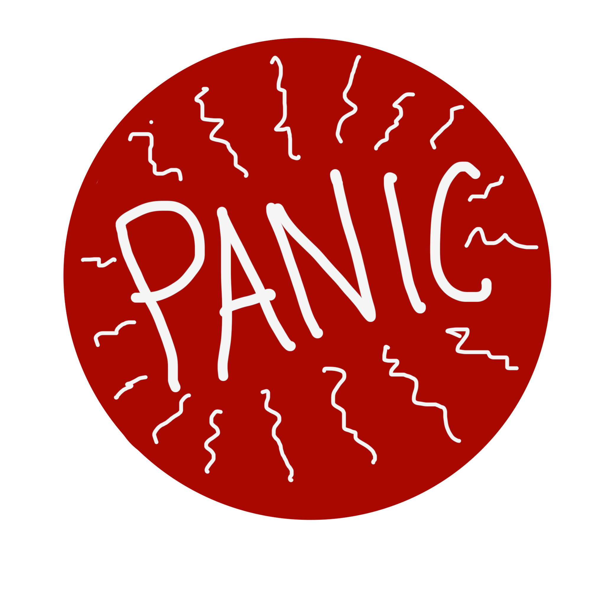

×
Trapped in a maze..again?! Bad things really do happen to good people, but if you manage to exit, maybe something good can come of this.
Use
WASD
to move.
Use
Q
to look up and
E
to look down.
Or use:
Close
